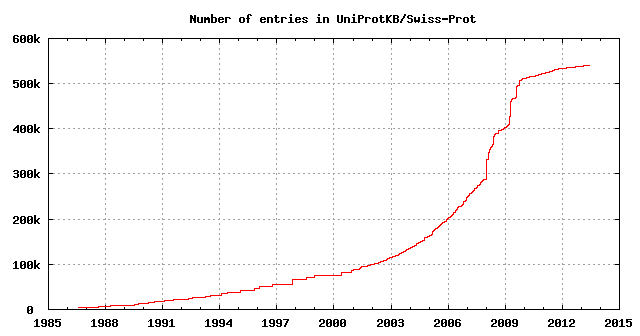
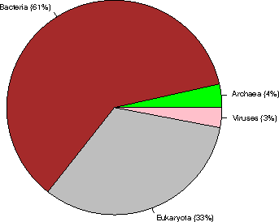
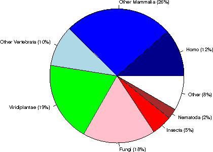
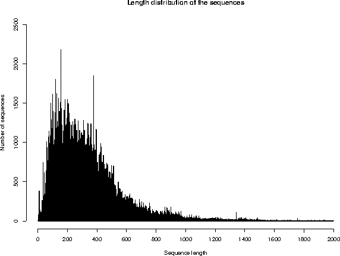
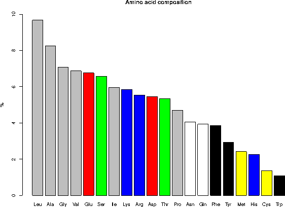

UniProtKB/Swiss-Prot protein knowledgebase release 2013_06 statistics
1. INTRODUCTION
Release 2013_06 of 29-May-13 of UniProtKB/Swiss-Prot contains 540261 sequence entries,
comprising 191876607 amino acids abstracted from 219534 references.
220 sequences have been added since release 2013_05, the sequence data of
159 existing entries has been updated and the annotations of
305232 entries have been revised.
Number of fragments: 9065
Number of additional sequences produced by alternative splicing, initiation or promoter usage, or ribosomal frameshifting: 34285
Protein existence (PE): entries %
1: Evidence at protein level 79161 14.7%
2: Evidence at transcript level 64260 11.9%
3: Inferred from homology 379230 70.2%
4: Predicted 15711 2.9%
5: Uncertain 1899 0.4%
The growth of the database is summarized below.

2. TAXONOMIC ORIGIN
Total number of species represented in this release of UniProtKB/Swiss-Prot: 12988
The first twenty species represent 113431 sequences: 21 % of the total
number of entries.
2.1 Table of the frequency of occurrence of species
Species represented 1x: 5435
2x: 1883
3x: 987
4x: 641
5x: 470
6x: 394
7x: 285
8x: 219
9x: 204
10x: 119
11- 20x: 694
21- 50x: 404
51-100x: 212
>100x: 1041
2.2 Table of the most represented species
------ --------- --------------------------------------------
Number Frequency Species
------ --------- --------------------------------------------
1 20257 Homo sapiens (Human)
2 16613 Mus musculus (Mouse)
3 12069 Arabidopsis thaliana (Mouse-ear cress)
4 7854 Rattus norvegicus (Rat)
5 6621 Saccharomyces cerevisiae (strain ATCC 204508 / S288c) (Baker's yeast)
6 5977 Bos taurus (Bovine)
7 5089 Schizosaccharomyces pombe (strain 972 / ATCC 24843) (Fission yeast)
8 4431 Escherichia coli (strain K12)
9 4188 Bacillus subtilis (strain 168)
10 4126 Dictyostelium discoideum (Slime mold)
11 3428 Caenorhabditis elegans
12 3365 Xenopus laevis (African clawed frog)
13 3195 Drosophila melanogaster (Fruit fly)
14 3038 Oryza sativa subsp. japonica (Rice)
15 2885 Danio rerio (Zebrafish) (Brachydanio rerio)
16 2255 Gallus gallus (Chicken)
17 2218 Pongo abelii (Sumatran orangutan) (Pongo pygmaeus abelii)
18 2020 Mycobacterium tuberculosis
19 2015 Escherichia coli O157:H7
20 1787 Methanocaldococcus jannaschii
21 1771 Salmonella typhimurium (strain LT2 / SGSC1412 / ATCC 700720)
22 1707 Haemophilus influenzae (strain ATCC 51907 / DSM 11121 / KW20 / Rd)
23 1692 Xenopus tropicalis (Western clawed frog) (Silurana tropicalis)
24 1684 Escherichia coli O6:H1 (strain CFT073 / ATCC 700928 / UPEC)
25 1678 Shigella flexneri
26 1412 Sus scrofa (Pig)
27 1346 Salmonella typhi
28 1245 Pseudomonas aeruginosa (strain ATCC 15692 / PAO1 / 1C / PRS 101 / LMG 12228)
29 1242 Mycobacterium bovis (strain ATCC BAA-935 / AF2122/97)
30 1170 Macaca fascicularis (Crab-eating macaque) (Cynomolgus monkey)
31 1036 Synechocystis sp. (strain PCC 6803 / Kazusa)
32 1018 Yersinia pestis
33 1015 Archaeoglobus fulgidus
34 950 Vibrio cholerae serotype O1 (strain ATCC 39315 / El Tor Inaba N16961)
35 930 Salmonella paratyphi A (strain ATCC 9150 / SARB42)
36 926 Ashbya gossypii (strain ATCC 10895 / CBS 109.51 / FGSC 9923 / NRRL Y-1056)
37 925 Staphylococcus aureus (strain N315)
38 923 Staphylococcus aureus (strain Mu50 / ATCC 700699)
39 909 Acanthamoeba polyphaga mimivirus (APMV)
40 905 Kluyveromyces lactis
41 899 Staphylococcus aureus (strain COL)
42 895 Staphylococcus aureus (strain MW2)
43 889 Escherichia coli O6:K15:H31 (strain 536 / UPEC)
44 889 Staphylococcus aureus (strain MSSA476)
45 889 Oryctolagus cuniculus (Rabbit)
46 888 Staphylococcus aureus (strain MRSA252)
47 882 Salmonella choleraesuis (strain SC-B67)
48 878 Shigella sonnei (strain Ss046)
49 869 Rhizobium meliloti (strain 1021) (Ensifer meliloti) (Sinorhizobium meliloti)
50 863 Yersinia pseudotuberculosis serotype I (strain IP32953)
51 861 Candida glabrata
52 841 Escherichia coli O9:H4 (strain HS)
53 835 Neurospora crassa
54 834 Escherichia coli O139:H28 (strain E24377A / ETEC)
55 829 Shigella boydii serotype 4 (strain Sb227)
56 825 Escherichia coli (strain UTI89 / UPEC)
57 821 Shigella dysenteriae serotype 1 (strain Sd197)
58 819 Escherichia coli (strain ATCC 8739 / DSM 1576 / Crooks)
59 803 Canis familiaris (Dog) (Canis lupus familiaris)
60 791 Escherichia coli (strain SMS-3-5 / SECEC)
61 787 Vibrio parahaemolyticus serotype O3:K6 (strain RIMD 2210633)
62 783 Erwinia carotovora subsp. atroseptica (strain SCRI 1043 / ATCC BAA-672)
63 782 Aquifex aeolicus (strain VF5)
64 775 Pasteurella multocida (strain Pm70)
65 775 Emericella nidulans
66 771 Escherichia coli (strain K12 / DH10B)
67 765 Escherichia coli O127:H6 (strain E2348/69 / EPEC)
68 765 Escherichia coli (strain K12 / MC4100 / BW2952)
69 764 Escherichia coli O17:K52:H18 (strain UMN026 / ExPEC)
70 762 Escherichia coli (strain 55989 / EAEC)
71 761 Escherichia coli O8 (strain IAI1)
72 760 Shigella flexneri serotype 5b (strain 8401)
73 759 Staphylococcus epidermidis (strain ATCC 35984 / RP62A)
74 758 Staphylococcus epidermidis (strain ATCC 12228)
75 756 Escherichia coli (strain SE11)
76 756 Streptomyces coelicolor (strain ATCC BAA-471 / A3(2) / M145)
77 756 Escherichia coli O45:K1 (strain S88 / ExPEC)
78 753 Escherichia coli O7:K1 (strain IAI39 / ExPEC)
79 748 Escherichia coli O157:H7 (strain EC4115 / EHEC)
80 744 Photorhabdus luminescens subsp. laumondii (strain TT01)
81 740 Staphylococcus aureus (strain NCTC 8325)
82 736 Bacillus anthracis
83 736 Bacillus halodurans
84 735 Yersinia enterocolitica serotype O:8 / biotype 1B (strain 8081)
85 733 Vibrio vulnificus (strain CMCP6)
86 731 Escherichia coli O81 (strain ED1a)
87 721 Salmonella enteritidis PT4 (strain P125109)
88 720 Candida albicans (strain SC5314 / ATCC MYA-2876) (Yeast)
89 717 Vibrio vulnificus (strain YJ016)
90 716 Salmonella paratyphi B (strain ATCC BAA-1250 / SPB7)
91 716 Zea mays (Maize)
92 715 Yersinia pestis bv. Antiqua (strain Nepal516)
93 714 Salmonella paratyphi A (strain AKU_12601)
94 713 Klebsiella pneumoniae subsp. pneumoniae (strain ATCC 700721 / MGH 78578)
95 713 Enterobacter sp. (strain 638)
96 713 Salmonella agona (strain SL483)
97 713 Escherichia coli O1:K1 / APEC
98 713 Salmonella newport (strain SL254)
99 713 Yersinia pseudotuberculosis serotype O:1b (strain IP 31758)
100 712 Salmonella schwarzengrund (strain CVM19633)
101 711 Yersinia pestis bv. Antiqua (strain Antiqua)
102 710 Salmonella heidelberg (strain SL476)
103 702 Salmonella dublin (strain CT_02021853)
104 698 Shigella boydii serotype 18 (strain CDC 3083-94 / BS512)
105 696 Klebsiella pneumoniae (strain 342)
106 695 Escherichia fergusonii (strain ATCC 35469 / DSM 13698 / CDC 0568-73)
107 693 Pseudomonas putida (strain KT2440)
108 689 Nostoc sp. (strain PCC 7120 / UTEX 2576)
109 688 Pan troglodytes (Chimpanzee)
110 687 Mycoplasma pneumoniae (strain ATCC 29342 / M129)
111 683 Salmonella gallinarum (strain 287/91 / NCTC 13346)
112 678 Citrobacter koseri (strain ATCC BAA-895 / CDC 4225-83 / SGSC4696)
113 675 Pseudomonas syringae pv. tomato (strain DC3000)
114 670 Serratia proteamaculans (strain 568)
115 668 Mycobacterium leprae (strain TN)
116 667 Yersinia pestis (strain Pestoides F)
117 666 Staphylococcus aureus (strain USA300)
118 658 Rhizobium sp. (strain NGR234)
119 658 Bradyrhizobium japonicum (strain USDA 110)
120 656 Neosartorya fumigata (strain ATCC MYA-4609 / Af293 / CBS 101355 / FGSC A1100)
121 653 Debaryomyces hansenii
122 652 Bacillus cereus (strain ATCC 14579 / DSM 31)
123 646 Escherichia coli
124 643 Staphylococcus aureus (strain bovine RF122 / ET3-1)
125 642 Salmonella arizonae (strain ATCC BAA-731 / CDC346-86 / RSK2980)
126 642 Yarrowia lipolytica (strain CLIB 122 / E 150) (Yeast) (Candida lipolytica)
127 638 Yersinia pseudotuberculosis serotype O:3 (strain YPIII)
128 635 Shewanella oneidensis (strain MR-1)
129 634 Yersinia pseudotuberculosis serotype IB (strain PB1/+)
130 632 Agrobacterium tumefaciens (strain C58 / ATCC 33970)
131 623 Oryza sativa subsp. indica (Rice)
132 622 Cronobacter sakazakii (strain ATCC BAA-894) (Enterobacter sakazakii)
133 616 Treponema pallidum (strain Nichols)
134 613 Methanothermobacter thermautotrophicus
135 612 Staphylococcus haemolyticus (strain JCSC1435)
136 606 Rhizobium loti (strain MAFF303099) (Mesorhizobium loti)
137 605 Xanthomonas campestris pv. campestris (strain ATCC 33913 / NCPPB 528 / LMG 568)
138 602 Ralstonia solanacearum (strain GMI1000) (Pseudomonas solanacearum)
139 602 Listeria monocytogenes serovar 1/2a (strain ATCC BAA-679 / EGD-e)
140 602 Photobacterium profundum (Photobacterium sp. (strain SS9))
141 602 Staphylococcus saprophyticus subsp. saprophyticus
142 601 Salmonella paratyphi C (strain RKS4594)
143 600 Yersinia pestis bv. Antiqua (strain Angola)
144 591 Listeria innocua serovar 6a (strain CLIP 11262)
145 590 Bacillus cereus (strain ATCC 10987)
146 589 Pectobacterium carotovorum subsp. carotovorum (strain PC1)
147 586 Rickettsia prowazekii (strain Madrid E)
148 581 Helicobacter pylori (strain ATCC 700392 / 26695) (Campylobacter pylori)
149 579 Neisseria meningitidis serogroup B (strain MC58)
150 576 Brucella suis biovar 1 (strain 1330)
151 572 Brucella melitensis biotype 1 (strain 16M / ATCC 23456 / NCTC 10094)
152 572 Buchnera aphidicola subsp. Acyrthosiphon pisum (strain APS)
153 568 Caenorhabditis briggsae
154 567 Bacillus thuringiensis subsp. konkukian (strain 97-27)
155 566 Pseudomonas syringae pv. syringae (strain B728a)
156 565 Helicobacter pylori (strain J99) (Campylobacter pylori J99)
157 565 Caulobacter crescentus (strain ATCC 19089 / CB15)
158 564 Vibrio fischeri (strain ATCC 700601 / ES114)
159 564 Pseudomonas aeruginosa (strain UCBPP-PA14)
160 563 Bacillus licheniformis (strain DSM 13 / ATCC 14580)
161 562 Buchnera aphidicola subsp. Schizaphis graminum (strain Sg)
162 561 Bacillus cereus (strain ZK / E33L)
163 557 Clostridium acetobutylicum
164 556 Xanthomonas axonopodis pv. citri (strain 306)
165 552 Oceanobacillus iheyensis (strain DSM 14371 / JCM 11309 / KCTC 3954 / HTE831)
166 552 Neisseria meningitidis serogroup A / serotype 4A (strain Z2491)
167 552 Pseudomonas fluorescens (strain Pf0-1)
168 546 Pseudomonas fluorescens (strain Pf-5 / ATCC BAA-477)
169 545 Pseudomonas syringae pv. phaseolicola (strain 1448A / Race 6)
170 533 Lactococcus lactis subsp. lactis (strain IL1403) (Streptococcus lactis)
171 532 Thermotoga maritima (strain ATCC 43589 / MSB8 / DSM 3109 / JCM 10099)
172 531 Erwinia tasmaniensis (strain DSM 17950 / Et1/99)
173 529 Sodalis glossinidius (strain morsitans)
174 529 Listeria monocytogenes serotype 4b (strain F2365)
175 522 Bordetella bronchiseptica (strain ATCC BAA-588 / NCTC 13252 / RB50)
176 522 Xylella fastidiosa (strain 9a5c)
177 515 Chromobacterium violaceum
178 515 Bordetella pertussis (strain Tohama I / ATCC BAA-589 / NCTC 13251)
179 513 Corynebacterium glutamicum
180 512 Xylella fastidiosa (strain Temecula1 / ATCC 700964)
181 511 Pseudomonas aeruginosa (strain PA7)
182 511 Vibrio cholerae serotype O1 (strain ATCC 39541 / Ogawa 395 / O395)
183 510 Haemophilus ducreyi (strain 35000HP / ATCC 700724)
184 508 Staphylococcus aureus (strain Newman)
185 508 Bordetella parapertussis (strain 12822 / ATCC BAA-587 / NCTC 13253)
186 507 Buchnera aphidicola subsp. Baizongia pistaciae (strain Bp)
187 507 Geobacillus kaustophilus (strain HTA426)
188 505 Streptomyces avermitilis
189 502 Streptococcus pneumoniae serotype 4 (strain ATCC BAA-334 / TIGR4)
190 502 Deinococcus radiodurans
191 500 Pseudomonas entomophila (strain L48)
192 499 Brucella abortus biovar 1 (strain 9-941)
193 497 Rickettsia conorii (strain ATCC VR-613 / Malish 7)
194 496 Bacillus clausii (strain KSM-K16)
195 495 Burkholderia pseudomallei (strain K96243)
196 495 Haemophilus influenzae (strain 86-028NP)
197 494 Proteus mirabilis (strain HI4320)
198 492 Methanosarcina acetivorans (strain ATCC 35395 / DSM 2834 / JCM 12185 / C2A)
199 492 Bacillus amyloliquefaciens (strain FZB42)
200 491 Xanthomonas campestris pv. campestris (strain 8004)
201 490 Vibrio harveyi (strain ATCC BAA-1116 / BB120)
202 487 Shewanella sp. (strain MR-7)
203 486 Mannheimia succiniciproducens (strain MBEL55E)
204 484 Pseudomonas aeruginosa (strain LESB58)
205 484 Staphylococcus aureus (strain Mu3 / ATCC 700698)
206 484 Shewanella sp. (strain MR-4)
207 483 Mycoplasma genitalium (strain ATCC 33530 / G-37 / NCTC 10195)
208 481 Thermosynechococcus elongatus (strain BP-1)
209 480 Pyrococcus furiosus (strain ATCC 43587 / DSM 3638 / JCM 8422 / Vc1)
210 480 Acinetobacter sp. (strain ADP1)
211 479 Pyrococcus horikoshii
212 478 Synechococcus elongatus (strain PCC 7942) (Anacystis nidulans R2)
213 475 Pseudomonas putida (strain F1 / ATCC 700007)
214 474 Burkholderia sp. (strain 383) (Burkholderia cepacia
215 474 Brucella abortus (strain 2308)
216 473 Streptococcus pneumoniae (strain ATCC BAA-255 / R6)
217 473 Aspergillus oryzae (strain ATCC 42149 / RIB 40) (Yellow koji mold)
218 469 Methanosarcina mazei
219 468 Pyrococcus abyssi (strain GE5 / Orsay)
220 468 Halobacterium salinarum (strain ATCC 700922 / JCM 11081 / NRC-1)
221 468 Clostridium perfringens (strain 13 / Type A)
222 466 Xanthomonas campestris pv. vesicatoria (strain 85-10)
223 466 Shewanella frigidimarina (strain NCIMB 400)
224 466 Pseudomonas putida (strain GB-1)
225 466 Cupriavidus necator (strain ATCC 17699 / H16 / DSM 428 / Stanier 337)
226 464 Aeromonas hydrophila subsp. hydrophila (strain ATCC 7966 / NCIB 9240)
227 463 Rhodopseudomonas palustris (strain ATCC BAA-98 / CGA009)
228 463 Shewanella sp. (strain ANA-3)
229 462 Burkholderia mallei (strain ATCC 23344)
230 462 Anabaena variabilis (strain ATCC 29413 / PCC 7937)
231 461 Lactobacillus plantarum (strain ATCC BAA-793 / NCIMB 8826 / WCFS1)
232 460 Mycobacterium smegmatis (strain ATCC 700084 / mc(2)155)
233 459 Cupriavidus pinatubonensis (strain JMP134 / LMG 1197) (Alcaligenes eutrophus)
234 459 Rhodobacter sphaeroides (strain ATCC 17023 / 2.4.1 / NCIB 8253 / DSM 158)
235 458 Enterococcus faecalis (strain ATCC 700802 / V583)
236 455 Staphylococcus aureus (strain JH1)
237 454 Methylococcus capsulatus (strain ATCC 33009 / NCIMB 11132 / Bath)
238 454 Ovis aries (Sheep)
239 454 Xanthomonas oryzae pv. oryzae (strain MAFF 311018)
240 453 Nicotiana tabacum (Common tobacco)
241 453 Pseudomonas putida (strain W619)
242 453 Rickettsia felis (strain ATCC VR-1525 / URRWXCal2) (Rickettsia azadi)
243 452 Shewanella baltica (strain OS185)
244 451 Campylobacter jejuni subsp. jejuni serotype O:2 (strain NCTC 11168)
245 451 Aeromonas salmonicida (strain A449)
246 449 Thermoanaerobacter tengcongensis
247 449 Staphylococcus aureus (strain JH9)
248 449 Hahella chejuensis (strain KCTC 2396)
249 449 Mycobacterium paratuberculosis (strain ATCC BAA-968 / K-10)
250 448 Sulfolobus solfataricus (strain ATCC 35092 / DSM 1617 / JCM 11322 / P2)
2.3 Taxonomic distribution of the sequences

Kingdom sequences (% of the database)
Archaea 19015 ( 4%)
Bacteria 328923 ( 61%)
Eukaryota 175992 ( 33%)
Viruses 16331 ( 3%)
Within Eukaryota:

Category sequences (% of Eukaryota) (% of the complete database)
Human 20258 ( 12%) ( 4%)
Other Mammalia 45892 ( 26%) ( 8%)
Other Vertebrata 17427 ( 10%) ( 3%)
Viridiplantae 33903 ( 19%) ( 6%)
Fungi 30834 ( 18%) ( 6%)
Insecta 8686 ( 5%) ( 2%)
Nematoda 4303 ( 2%) ( 1%)
Other 14689 ( 8%) ( 3%)
3. SEQUENCE SIZE
Repartition of the sequences by size (excluding fragments)
From To Number From To Number
1- 50 9054 1001-1100 3746
51- 100 41392 1101-1200 2593
101- 150 57659 1201-1300 2020
151- 200 57750 1301-1400 1882
201- 250 56491 1401-1500 1509
251- 300 49970 1501-1600 729
301- 350 50155 1601-1700 568
351- 400 43420 1701-1800 467
401- 450 35502 1801-1900 427
451- 500 28590 1901-2000 351
501- 550 20344 2001-2100 212
551- 600 14610 2101-2200 287
601- 650 12264 2201-2300 294
651- 700 8843 2301-2400 181
701- 750 7294 2401-2500 138
751- 800 5184 >2500 1090
801- 850 4534
851- 900 5025
901- 950 3871
951-1000 2750

The average sequence length in UniProtKB/Swiss-Prot is 355 amino acids.
The shortest sequence is GWA_SEPOF (P83570): 2 amino acids.
The longest sequence is TITIN_MOUSE (A2ASS6): 35213 amino acids.
4. JOURNAL CITATIONS
Note: the following citation statistics reflect the number of distinct
journal citations.
Total number of journals cited in this release of UniProtKB/Swiss-Prot: 2325
4.1 Table of the frequency of journal citations
Journals cited 1x: 758
2x: 305
3x: 155
4x: 115
5x: 88
6x: 75
7x: 55
8x: 46
9x: 37
10x: 31
11- 20x: 182
21- 50x: 192
51-100x: 99
>100x: 187
4.2 List of the most cited journals in UniProtKB/Swiss-Prot
Nb Citations Journal name
-- --------- -------------------------------------------------------------
1 21137 Journal of Biological Chemistry
2 9537 Proceedings of the National Academy of Sciences of the U.S.A.
3 5718 Journal of Bacteriology
4 5043 Biochemical and Biophysical Research Communications
5 4601 Gene
6 4571 Nucleic Acids Research
7 4456 Biochemistry
8 4365 FEBS Letters
9 4229 The EMBO Journal
10 3924 Molecular and Cellular Biology
11 3717 Nature
12 3571 Journal of Molecular Biology
13 3243 European Journal of Biochemistry
14 3221 Biochimica et Biophysica Acta
15 3036 Cell
16 2578 Journal of Virology
17 2509 Genomics
18 2502 Biochemical Journal
19 2464 Science
20 2053 Molecular Microbiology
21 1880 Journal of Cell Biology
22 1861 Plant Physiology
23 1645 Plant Molecular Biology
24 1596 Genes and Development
25 1596 The American Journal of Human Genetics
26 1538 Virology
27 1508 Nature Genetics
28 1453 Human Molecular Genetics
29 1439 Oncogene
30 1345 Molecular and General Genetics
31 1340 Development
32 1332 Molecular Biology of the Cell
33 1311 Human Mutation
34 1289 The Plant Cell
35 1241 Journal of Biochemistry
36 1191 Journal of Immunology
37 1177 The Plant Journal
38 1162 Molecular Cell
39 1104 Genetics
40 1085 Structure
41 1029 Journal of General Virology
42 978 Blood
43 949 Journal of Cell Science
44 948 Infection and Immunity
45 928 Archives of Biochemistry and Biophysics
46 861 Microbiology
47 835 Developmental Biology
48 810 Cancer Research
49 795 Current Biology
50 786 Yeast
51 735 FEMS Microbiology Letters
52 677 Acta Crystallographica, Section D
53 659 Protein Science
54 650 Journal of Neuroscience
55 647 Toxicon
56 641 Applied and Environmental Microbiology
57 626 Human Genetics
58 626 Nature Structural Biology
59 622 Mechanisms of Development
60 594 Neuron
61 581 PLoS ONE
62 576 Journal of Clinical Investigation
63 546 American Journal of Physiology
64 540 Current Genetics
65 528 The Journal of Experimental Medicine
66 497 Proteins
67 485 Molecular Endocrinology
68 479 Mammalian Genome
69 476 Plant and Cell Physiology
70 467 Journal of Neurochemistry
71 459 Immunogenetics
72 449 Nature Cell Biology
73 448 Bioscience, Biotechnology, and Biochemistry
74 443 The Journal of Clinical Endocrinology and Metabolism
75 436 Endocrinology
76 429 Molecular and Biochemical Parasitology
77 416 Journal of Medical Genetics
78 398 Journal of Molecular Evolution
79 381 Experimental Cell Research
80 379 Molecular Biology and Evolution
81 377 DNA and Cell Biology
82 365 DNA Sequence
83 351 Peptides
84 333 Nature Structural and Molecular Biology
85 329 Brain Research. Molecular Brain Research
86 328 RNA
87 326 Developmental Cell
88 325 Tissue Antigens
89 320 Comparative Biochemistry and Physiology
90 318 The FEBS Journal
91 316 Antimicrobial Agents and Chemotherapy
92 308 Journal of Investigative Dermatology
93 305 Molecular Pharmacology
94 304 Planta
95 294 Biological Chemistry Hoppe-Seyler
96 285 Biology of Reproduction
97 280 Neurology
98 279 Cytogenetics and Cell Genetics
99 269 Virus Research
100 268 Developmental Dynamics
101 267 Genome Research
102 259 Immunity
103 257 Journal of General Microbiology
104 257 Eukaryotic Cell
105 257 EMBO Reports
106 255 Biochimie
107 251 Genes to Cells
108 245 Molecular Plant-Microbe Interactions
109 242 The FASEB Journal
110 237 The New England Journal of Medicine
111 234 European Journal of Immunology
112 224 Annals of Neurology
113 223 European Journal of Human Genetics
114 218 Hoppe-Seyler's Zeitschrift fur Physiologische Chemie
115 217 Journal of the American Chemical Society
116 215 DNA Research
117 211 Journal of Human Genetics
118 202 Investigative Ophthalmology and Visual Science
119 200 Archives of Microbiology
120 198 Acta Crystallographica, Section F
121 196 Nature Immunology
122 190 Journal of Experimental Botany
123 190 Journal of Cellular Biochemistry
124 190 Archives of Virology
125 188 BMC Genomics
126 187 American Journal of Medical Genetics. Part A
127 186 Molecular and Cellular Endocrinology
128 183 Molecular Immunology
129 181 Glycobiology
130 178 Clinical Genetics
131 176 Journal of Medicinal Chemistry
132 173 Diabetes
133 172 Insect Biochemistry and Molecular Biology
134 168 American Journal of Medical Genetics
135 168 Circulation Research
136 168 Molecular Phylogenetics and Evolution
137 166 PLoS Genetics
138 165 International Journal of Cancer
139 165 Traffic
140 160 Molecular Genetics and Metabolism
141 159 Molecular Reproduction and Development
142 159 DNA
143 158 Phytochemistry
144 155 Hemoglobin
145 154 Bioorganicheskaia Khimiia
146 154 Molecular Genetics and Genomics
147 154 Biological Chemistry
148 153 Protein Expression and Purification
149 153 Molecular and Cellular Neuroscience
150 152 Cell Cycle
5. STATISTICS FOR SOME LINE TYPES
The following table summarizes the total number of some UniProtKB/Swiss-Prot lines,
as well as the number of entries with at least one such line, and the
frequency of the lines.
Total Number of Average
Line type / subtype number entries per entry
------------------------------------ -------- --------- ---------
References (RL) 1042620 1.93
Journal 836079 417690 1.55 1
Submitted to EMBL/GenBank/DDBJ 197416 176349 0.37 2
Submitted to other databases 6896 6423 0.01 3
Book citation 724 710 <0.01 4
Plant Gene Register 585 573 <0.01 5
Thesis 420 417 <0.01 6
Unpublished observations 304 300 <0.01 7
Patent 190 187 <0.01 8
Worm Breeder's Gazette 6 6 <0.01 9
Total number of distinct authors cited in UniProtKB/Swiss-Prot: 336296
Total Number of Average
Line type / subtype number entries per entry Rank
------------------------------------ -------- --------- --------- ----
Comments (CC) 2428057 4.49
ALLERGEN 529 529 <0.01 27
ALTERNATIVE PRODUCTS 22021 22021 0.04 13
BIOPHYSICOCHEMICAL PROPERTIES 4985 4985 0.01 23
BIOTECHNOLOGY 345 343 <0.01 28
CATALYTIC ACTIVITY 243842 221020 0.45 5
CAUTION 9356 9183 0.02 19
COFACTOR 108466 98839 0.20 7
DEVELOPMENTAL STAGE 9880 9880 0.02 17
DISEASE 5244 3516 0.01 22
DISRUPTION PHENOTYPE 5710 5710 0.01 20
DOMAIN 39566 34855 0.07 10
ENZYME REGULATION 11174 11174 0.02 15
FUNCTION 421780 404496 0.78 2
INDUCTION 15274 15274 0.03 14
INTERACTION 10182 10182 0.02 16
MASS SPECTROMETRY 5530 4227 0.01 21
MISCELLANEOUS 32867 30394 0.06 12
PATHWAY 131715 119862 0.24 6
PHARMACEUTICAL 92 92 <0.01 29
POLYMORPHISM 892 839 <0.01 24
PTM 44462 34746 0.08 8
RNA EDITING 627 627 <0.01 25
SEQUENCE CAUTION 41132 41132 0.08 9
SIMILARITY 641761 515637 1.19 1
SUBCELLULAR LOCATION 327337 321367 0.61 3
SUBUNIT 244522 244522 0.45 4
TISSUE SPECIFICITY 38782 38782 0.07 11
TOXIC DOSE 551 515 <0.01 26
WEB RESOURCE 9433 7501 0.02 18
Total number of comment topics: 29
Total Number of Average
Line type / subtype number entries per entry Rank
------------------------------------ -------- --------- --------- ----
Features (FT) 3724819 6.89
ACT_SITE 142672 87185 0.26 9
BINDING 293001 78108 0.54 4
CA_BIND 3915 1636 0.01 35
CARBOHYD 107343 27511 0.20 15
CHAIN 547065 534045 1.01 1
COILED 20253 13909 0.04 26
COMPBIAS 54393 28852 0.10 18
CONFLICT 127838 44786 0.24 12
CROSSLNK 6802 3927 0.01 34
DISULFID 109525 30083 0.20 14
DNA_BIND 10374 9449 0.02 31
DOMAIN 161416 96004 0.30 8
HELIX 181084 17647 0.34 6
INIT_MET 14256 14256 0.03 27
INTRAMEM 2173 937 <0.01 37
LIPID 11925 7565 0.02 30
METAL 319394 78388 0.59 3
MOD_RES 166685 60840 0.31 7
MOTIF 35930 23285 0.07 24
MUTAGEN 43729 10134 0.08 22
NON_CONS 2043 751 <0.01 38
NON_STD 354 279 <0.01 39
NON_TER 12211 9330 0.02 29
NP_BIND 121050 73759 0.22 13
PEPTIDE 10305 7028 0.02 32
PROPEP 12667 10898 0.02 28
REGION 133571 68029 0.25 10
REPEAT 95297 14072 0.18 16
SIGNAL 38283 38273 0.07 23
SITE 47105 26278 0.09 19
STRAND 189520 16668 0.35 5
TOPO_DOM 130529 27098 0.24 11
TRANSIT 8369 8265 0.02 33
TRANSMEM 356364 73570 0.66 2
TURN 44034 14284 0.08 21
UNSURE 3359 715 0.01 36
VAR_SEQ 45074 19157 0.08 20
VARIANT 85527 16750 0.16 17
ZN_FING 29384 12913 0.05 25
Total number of feature keys: 39
Total Number of Average
Line type / subtype number entries per entry Rank Category
------------------------------------ -------- --------- --------- ---- -------------------------------------------
Cross-references (DR) 15982598 29.58
Allergome 1502 942 <0.01 101 Protein family/group databases
ArachnoServer 763 755 <0.01 112 Organism-specific databases
ArrayExpress 36167 36167 0.07 47 Gene expression databases
Bgee 38776 38776 0.07 45 Gene expression databases
BindingDB 5033 5033 0.01 85 Other
BioCyc 311752 301069 0.58 20 Enzyme and pathway databases
BRENDA 4320 4310 0.01 91 Enzyme and pathway databases
CAZy 7635 6875 0.01 74 Protein family/group databases
CGD 700 678 <0.01 113 Organism-specific databases
ChEMBL 5222 5222 0.01 82 Other
ChiTaRS 12531 12526 0.02 69 Other
CleanEx 30084 29443 0.06 51 Gene expression databases
COMPLUYEAST-2DPAGE 99 98 <0.01 125 2D gel databases
ConoServer 916 834 <0.01 107 Organism-specific databases
CTD 70240 69562 0.13 39 Organism-specific databases
CYGD 5596 5593 0.01 79 Organism-specific databases
dictyBase 4203 4087 0.01 93 Organism-specific databases
DIP 14222 14131 0.03 67 Protein-protein interaction databases
DisProt 398 395 <0.01 120 3D structure databases
DMDM 16758 16755 0.03 63 Polymorphism databases
DNASU 18699 18628 0.03 59 Protocols and materials databases
DOSAC-COBS-2DPAGE 149 147 <0.01 124 2D gel databases
DrugBank 5319 1628 0.01 81 Other
EchoBASE 4161 4161 0.01 94 Organism-specific databases
EcoGene 4292 4290 0.01 92 Organism-specific databases
eggNOG 430741 430741 0.80 10 Phylogenomic databases
EMBL 938828 529006 1.74 3 Sequence databases
Ensembl 83321 48412 0.15 35 Genome annotation databases
EnsemblBacteria 343291 325141 0.64 18 Genome annotation databases
EnsemblFungi 17644 17352 0.03 62 Genome annotation databases
EnsemblMetazoa 12380 9271 0.02 70 Genome annotation databases
EnsemblPlants 15977 14151 0.03 66 Genome annotation databases
EnsemblProtists 4499 4372 0.01 90 Genome annotation databases
euHCVdb 55 44 <0.01 126 Organism-specific databases
EuPathDB 810 798 <0.01 109 Organism-specific databases
EvolutionaryTrace 16588 16588 0.03 64 Other
FlyBase 5893 5519 0.01 78 Organism-specific databases
Gene3D 358846 274085 0.66 16 Family and domain databases
GeneCards 20041 19753 0.04 56 Organism-specific databases
GeneFarm 3181 3170 0.01 96 Organism-specific databases
GeneID 501164 470713 0.93 6 Genome annotation databases
GeneTree 38201 38182 0.07 46 Phylogenomic databases
Genevestigator 67362 67362 0.12 41 Gene expression databases
GenoList 7071 7059 0.01 75 Organism-specific databases
GenomeRNAi 21291 21290 0.04 54 Other
GermOnline 41894 41320 0.08 44 Gene expression databases
GlycoSuiteDB 272 272 <0.01 123 PTM databases
GO 2431618 510574 4.50 1 Ontologies
Gramene 6022 6022 0.01 77 Organism-specific databases
H-InvDB 5593 4772 0.01 80 Organism-specific databases
HAMAP 315755 315352 0.58 19 Family and domain databases
HGNC 19854 19686 0.04 57 Organism-specific databases
HOGENOM 385422 385422 0.71 13 Phylogenomic databases
HOVERGEN 75559 75559 0.14 37 Phylogenomic databases
HPA 19093 14742 0.04 58 Organism-specific databases
InParanoid 69983 69983 0.13 40 Phylogenomic databases
IntAct 34942 34942 0.06 48 Protein-protein interaction databases
InterPro 1823885 517288 3.38 2 Family and domain databases
IPI 97313 67805 0.18 32 Sequence databases
KEGG 477492 450825 0.88 8 Genome annotation databases
KO 375746 375352 0.70 14 Phylogenomic databases
LegioList 765 763 <0.01 111 Organism-specific databases
Leproma 671 668 <0.01 114 Organism-specific databases
MaizeGDB 499 494 <0.01 118 Organism-specific databases
MEROPS 11873 11873 0.02 72 Protein family/group databases
MGI 16526 16480 0.03 65 Organism-specific databases
MIM 18059 13686 0.03 61 Organism-specific databases
MINT 31520 31520 0.06 50 Protein-protein interaction databases
mycoCLAP 282 277 <0.01 122 Protein family/group databases
NextBio 70854 70854 0.13 38 Other
neXtProt 20098 20098 0.04 55 Organism-specific databases
OGP 377 377 <0.01 121 2D gel databases
OMA 394711 394711 0.73 12 Phylogenomic databases
Orphanet 5193 2816 0.01 83 Organism-specific databases
OrthoDB 78225 78225 0.14 36 Phylogenomic databases
PANTHER 203572 189742 0.38 24 Family and domain databases
Pathway_Interaction_DB 4568 1666 0.01 89 Enzyme and pathway databases
PATRIC 308958 308929 0.57 21 Genome annotation databases
PaxDb 66674 66674 0.12 42 Proteomic databases
PDB 94830 19462 0.18 34 3D structure databases
PDBsum 94830 19462 0.18 33 3D structure databases
PeptideAtlas 5163 5163 0.01 84 Proteomic databases
PeroxiBase 771 755 <0.01 110 Protein family/group databases
Pfam 722255 498909 1.34 4 Family and domain databases
PharmGKB 18374 18350 0.03 60 Organism-specific databases
PhosphoSite 33567 33567 0.06 49 PTM databases
PhosSite 659 647 <0.01 115 PTM databases
PhylomeDB 27569 27569 0.05 53 Phylogenomic databases
PIR 118719 108564 0.22 28 Sequence databases
PIRSF 99486 99292 0.18 30 Family and domain databases
PMAP-CutDB 1457 1457 <0.01 102 Other
PomBase 5016 4959 0.01 86 Organism-specific databases
PptaseDB 40 40 <0.01 127 Protein family/group databases
PRIDE 111021 111021 0.21 29 Proteomic databases
PRINTS 137283 120287 0.25 26 Family and domain databases
ProDom 29304 29125 0.05 52 Family and domain databases
ProMEX 819 819 <0.01 108 Proteomic databases
PROSITE 483155 304512 0.89 7 Family and domain databases
ProtClustDB 343981 343981 0.64 17 Phylogenomic databases
ProteinModelPortal 431994 431994 0.80 9 3D structure databases
PseudoCAP 1253 1244 <0.01 104 Organism-specific databases
Reactome 13102 7882 0.02 68 Enzyme and pathway databases
REBASE 403 403 <0.01 119 Protein family/group databases
RefSeq 526828 471068 0.98 5 Sequence databases
REPRODUCTION-2DPAGE 1257 1036 <0.01 103 2D gel databases
RGD 7768 7764 0.01 73 Organism-specific databases
SABIO-RK 2541 2541 <0.01 99 Enzyme and pathway databases
SGD 6640 6635 0.01 76 Organism-specific databases
SignaLink 2961 2961 0.01 97 Enzyme and pathway databases
SMART 167734 125565 0.31 25 Family and domain databases
SMR 207581 207581 0.38 23 3D structure databases
STRING 396551 396551 0.73 11 Protein-protein interaction databases
SUPFAM 373776 288870 0.69 15 Family and domain databases
SWISS-2DPAGE 1182 1181 <0.01 105 2D gel databases
TAIR 12086 12033 0.02 71 Organism-specific databases
TCDB 3664 3648 0.01 95 Protein family/group databases
TIGRFAMs 290396 269813 0.54 22 Family and domain databases
TubercuList 2033 1997 <0.01 100 Organism-specific databases
UCD-2DPAGE 509 500 <0.01 117 2D gel databases
UCSC 59053 44633 0.11 43 Genome annotation databases
UniGene 98851 89812 0.18 31 Sequence databases
UniPathway 131590 119742 0.24 27 Enzyme and pathway databases
VectorBase 606 588 <0.01 116 Genome annotation databases
World-2DPAGE 921 910 <0.01 106 2D gel databases
WormBase 4894 3945 0.01 87 Organism-specific databases
Xenbase 4736 4731 0.01 88 Organism-specific databases
ZFIN 2800 2800 0.01 98 Organism-specific databases
Total number of cross-referenced databases: 127
6. AMINO ACID COMPOSITION
6.1 Composition in percent for the complete database
Ala (A) 8.25 Gln (Q) 3.93 Leu (L) 9.66 Ser (S) 6.56
Arg (R) 5.53 Glu (E) 6.75 Lys (K) 5.84 Thr (T) 5.34
Asn (N) 4.06 Gly (G) 7.07 Met (M) 2.42 Trp (W) 1.08
Asp (D) 5.45 His (H) 2.27 Phe (F) 3.86 Tyr (Y) 2.92
Cys (C) 1.37 Ile (I) 5.96 Pro (P) 4.70 Val (V) 6.87
Asx (B) 0.000 Glx (Z) 0.000 Xaa (X) 0.00

Legend: gray = aliphatic, red = acidic, green = small hydroxy,
blue = basic, black = aromatic, white = amide, yellow = sulfur
6.2 Classification of the amino acids by their frequency
Leu, Ala, Gly, Val, Glu, Ser, Ile, Lys, Arg, Asp, Thr, Pro, Asn, Gln,
Phe, Tyr, Met, His, Cys, Trp
7. MISCELLANEOUS STATISTICS
4461 entries are encoded on a mitochondrion, and 3716 are encoded on a plasmid.
12188 entries are encoded on a plastid,
of which 21 are encoded on apicoplasts,
11623 on chloroplasts,
51 on organellar chromatophores,
145 on cyanelles,
149 on non-photosynthetic plastids and
199 on unspecified types of plastid.
Number of entries with at least one sequence correction: 74729